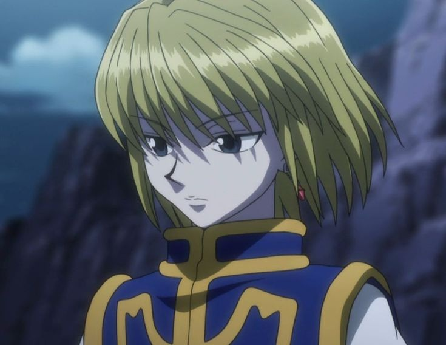
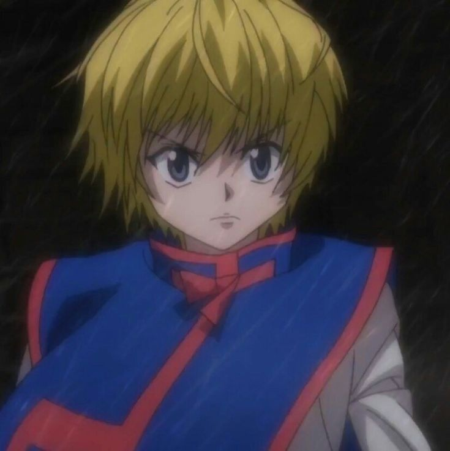

Origen y Trasfondo
Kurapika es el último superviviente del clan Kurta, un pueblo aislado y pacífico cuya sangre guarda un secreto ancestral: los ojos escarlata. Estos ojos, de un rojo intenso y valiosísimo, se activan solo ante emociones extremas.
A los doce años, la Brigada Fantasma masacró a todo su clan con el único fin de vender sus ojos en el mercado negro. Desde ese día, Kurapika carga con el peso de ser el único testigo y el único encargado de hacer justicia.
- Clan Kurta — guardianes de los ojos escarlata
- Único superviviente del genocidio
- Se convierte en Hunter para rastrear a la Brigada

Tras la masacre, Kurapika abandona su hogar en ruinas y se lanza al mundo exterior con un único propósito: recuperar los ojos de su gente y hacer pagar a quienes los asesinaron. Su camino lo lleva a presentarse al Examen de Hunter, donde conoce a Gon, Killua y Leorio.
